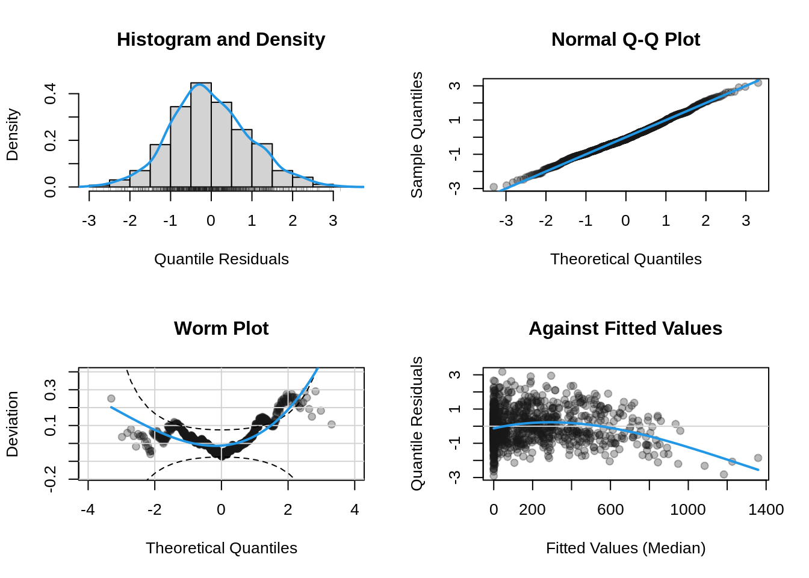

The package is designed to follow the workflow of well-established model fitting functions like lm() or glm(), i.e., the step of estimating full distributional regression models is actually not very difficult.
To illustrate the workflow using gamlss2, we analyze the HarzTraffic data, where we model the number of motorcycles (response bikes) at Sonnenberg in the Harz region of Germany. The data can be loaded with
The data consists of seasonal time information (variable yday) along with a number of environmental variables (e.g. mean daily temperature). As a first model, we estimate a linear regression model with normal errors (which is the default)
Note
Note that the use of the HarzTraffic data here is for demonstration purpose only and should not be taken as a proper final analysis.
Note that the summary output is very similar to lm() and glm() with the main difference being that summary outputs are provided for all parameters of the distribution. In this case, the model is estimated using the NO family of the gamlss.dist package, a two-parameter distribution with parameters mu and sigma.
1 Residual Diagnostics
Since we estimated a simple linear model with Gaussian errors up to now, we are assuming that the distribution of the response variable, the number of motorcycles (bikes), follows a normal distribution with constant variance. However, this assumption may not always hold true, especially when the response variable is count data, which often exhibits overdispersion or non-constant variance. The data also exhibits a strong seasonal effect that is likely not fully explained by the environmental variables alone. This effect may include nonlinear patterns that require further modeling for proper capture.
To assess whether the linear normal distribution with constant variance is appropriate, we can start by examining diagnostic plots.
plot(b1)
These plots help us visually inspect the residuals for any deviations from the assumptions of normality and constant variance.
2 Estimating Nonlinear Effects
The gamlss2 package uses the mgcv infrastructures for estimating nonlinear smooth effects. Now, let’s inspect the seaonal aspect of the data, there
par(mar =c(4, 4, 1, 1))plot(bikes ~ yday, data = HarzTraffic)
Clearly, the number of bikes increases during the summer season. Therefore, we add the seasonal component to the model using the s() smooth constructor of the mgcv package. Moreover, since the variation of the number of bikes increases during the summer season, we now estimate a full GAMLSS and model also the variance parameter of the normal distribution by covariates
## set up the model formula for## the mu and sigma parameter## the vertical | separates the two formulaef <- bikes ~ temp + rain + sunshine + wind +s(yday, bs ="cc") | temp + rain + sunshine + wind +s(yday, bs ="cc")## estimate modelb2 <-gamlss2(f, data = HarzTraffic)
GAMLSS-RS iteration 1: Global Deviance = 13299.0381 eps = 0.114458
GAMLSS-RS iteration 2: Global Deviance = 12599.4086 eps = 0.052607
GAMLSS-RS iteration 3: Global Deviance = 12016.9723 eps = 0.046227
GAMLSS-RS iteration 4: Global Deviance = 11573.6582 eps = 0.036890
GAMLSS-RS iteration 5: Global Deviance = 11473.417 eps = 0.008661
GAMLSS-RS iteration 6: Global Deviance = 11469.6537 eps = 0.000328
GAMLSS-RS iteration 7: Global Deviance = 11469.5639 eps = 0.000007
Plot estimated seasonal effect.
plot(b2)
The effect for both, mu and sigma show a clear seasonal peak during summer times.
Inspect again model residuals
plot(b2, which ="resid")
The quantile residuals show a much better model fit, but still show that the model might not be the most appropriate for predicting the number of bikes.
3 Count Models
Now, instead of a normal distribution, we use the negative binomial distribution for count data
b3 <-gamlss2(f, data = HarzTraffic, family = NBI)
GAMLSS-RS iteration 1: Global Deviance = 9919.3001 eps = 0.168829
GAMLSS-RS iteration 2: Global Deviance = 9831.2958 eps = 0.008872
GAMLSS-RS iteration 3: Global Deviance = 9822.4038 eps = 0.000904
GAMLSS-RS iteration 4: Global Deviance = 9820.9376 eps = 0.000149
GAMLSS-RS iteration 5: Global Deviance = 9819.6601 eps = 0.000130
GAMLSS-RS iteration 6: Global Deviance = 9819.4848 eps = 0.000017
GAMLSS-RS iteration 7: Global Deviance = 9819.3533 eps = 0.000013
GAMLSS-RS iteration 8: Global Deviance = 9819.3298 eps = 0.000002
Plot again the estimated smooth seasonal effects.
plot(b3)
Inspecting the model residuals again shows a major improvement.
plot(b3, which ="resid")

References
Rigby, R. A., and D. M. Stasinopoulos. 2005. “Generalized Additive Models for Location, Scale and Shape.”Journal of the Royal Statistical Society C 54 (3): 507–54. https://doi.org/10.1111/j.1467-9876.2005.00510.x.